# 安装包
if (!requireNamespace("magrittr", quietly = TRUE)) {
install.packages("magrittr")
}
if (!requireNamespace("tidyr", quietly = TRUE)) {
install.packages("tidyr")
}
if (!requireNamespace("ggplot2", quietly = TRUE)) {
install.packages("ggplot2")
}
if (!requireNamespace("cowplot", quietly = TRUE)) {
install.packages("cowplot")
}
if (!requireNamespace("forcats", quietly = TRUE)) {
install.packages("forcats")
}
if (!requireNamespace("dplyr", quietly = TRUE)) {
install.packages("dplyr")
}
if (!requireNamespace("hrbrthemes", quietly = TRUE)) {
install.packages("hrbrthemes")
}
if (!requireNamespace("ggpattern", quietly = TRUE)) {
install.packages("ggpattern")
}
if (!requireNamespace("ggpubr", quietly = TRUE)) {
install.packages("ggpubr")
}
if (!requireNamespace("rstatix", quietly = TRUE)) {
install.packages("rstatix")
}
if (!requireNamespace("palmerpenguins", quietly = TRUE)) {
install.packages("palmerpenguins")
}
# 加载包
library(magrittr)
library(tidyr)
library(ggplot2)
library(cowplot)
library(forcats)
library(dplyr)
library(hrbrthemes)
library(ggpattern)
library(rstatix)
library(ggpubr)
library(palmerpenguins)条形图
条形图是用条形的高度或长短来表示数据多少的图形。
示例

正如上图，各组条形分别反映了五种基因的表达情况。
环境配置
系统要求： 跨平台（Linux/MacOS/Windows）
编程语言：R
依赖包：
magrittr;tidyr;ggplot2;cowplot;forcats;dplyr;hrbrthemes;ggpattern;rstatix;ggpubr
sessioninfo::session_info("attached")─ Session info ───────────────────────────────────────────────────────────────
setting value
version R version 4.5.2 (2025-10-31)
os Ubuntu 24.04.3 LTS
system x86_64, linux-gnu
ui X11
language (EN)
collate C.UTF-8
ctype C.UTF-8
tz UTC
date 2025-12-27
pandoc 3.1.3 @ /usr/bin/ (via rmarkdown)
quarto 1.8.26 @ /usr/local/bin/quarto
─ Packages ───────────────────────────────────────────────────────────────────
package * version date (UTC) lib source
cowplot * 1.2.0 2025-07-07 [1] RSPM
dplyr * 1.1.4 2023-11-17 [1] RSPM
forcats * 1.0.1 2025-09-25 [1] RSPM
ggpattern * 1.2.1 2025-08-27 [1] RSPM
ggplot2 * 4.0.1 2025-11-14 [1] RSPM
ggpubr * 0.6.2 2025-10-17 [1] RSPM
hrbrthemes * 0.9.2 2025-11-02 [1] Github (hrbrmstr/hrbrthemes@d3fd029)
magrittr * 2.0.4 2025-09-12 [1] RSPM
palmerpenguins * 0.1.1 2022-08-15 [1] RSPM
rstatix * 0.7.3 2025-10-18 [1] RSPM
tidyr * 1.3.2 2025-12-19 [1] RSPM
[1] /home/runner/work/_temp/Library
[2] /opt/R/4.5.2/lib/R/site-library
[3] /opt/R/4.5.2/lib/R/library
* ── Packages attached to the search path.
──────────────────────────────────────────────────────────────────────────────数据准备
主要利用来自TCGA的数据和 R 中自带的数据集进行绘图。
data_TCGA <- readr::read_csv("https://bizard-1301043367.cos.ap-guangzhou.myqcloud.com/TCGA-BRCA.htseq_counts_processed.csv")
data_TCGA1 <- data_TCGA[1:5,] %>%
gather(key = "sample",value = "gene_expression",3:1219)
data_tcga_mean <- aggregate(data_TCGA1$gene_expression,
by=list(data_TCGA1$gene_name), mean) #均值
colnames(data_tcga_mean) <- c("gene","expression")
data_tcga_sd <- aggregate(data_TCGA1$gene_expression,
by=list(data_TCGA1$gene_name), sd)
colnames(data_tcga_sd) <- c("gene","sd")
data_tcga <- merge(data_tcga_mean, data_tcga_sd, by="gene")
data_penguins <- penguins
data_penguins_flipper_length <- aggregate(data_penguins$flipper_length_mm,
by=list(data_penguins$species,data_penguins$sex),
mean)
colnames(data_penguins_flipper_length) <- c("species","sex","flipper_length_mm")
data_mpg <- mpg可视化
1. 基础条形图
1.1 简单条形图
这里我们以TCGA数据库数据为例。
# 基础条形图
p <- ggplot(data_tcga_mean, aes(x=gene, y=expression)) +
geom_bar(stat = "identity")
p
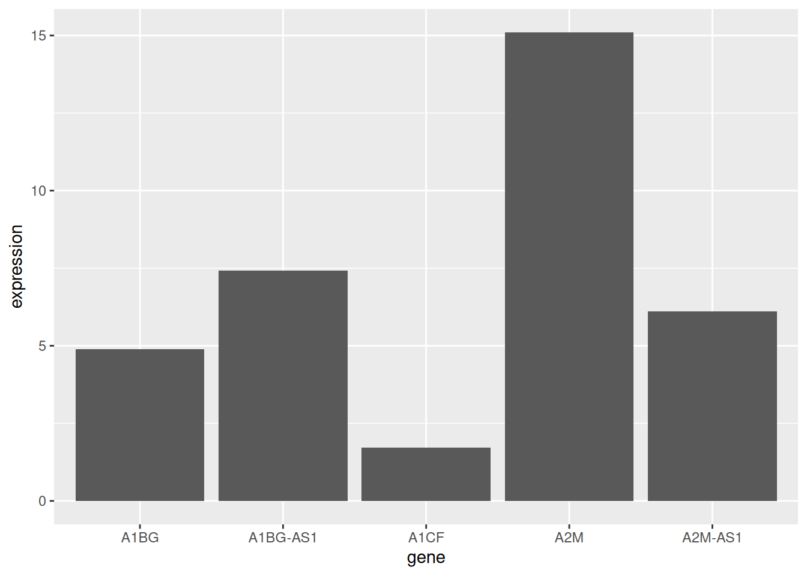
展示了五种基因样本表达的均值。
1.2 水平条形图
利用 coord_flip() 翻转坐标轴。
# 水平条形图
p <- data_tcga_mean %>%
mutate(gene=fct_reorder(gene,expression)) %>% # fct_reorder排序
ggplot(aes(x=gene, y=expression)) +
geom_bar(stat = "identity",width=0.5)+ # width调整宽度
coord_flip() # 翻转坐标轴
p
1.3 颜色设置
ggplot2 可以实现多种颜色设置方式，这里我们提供六个例子。
# 颜色设置
p1 <- ggplot(data_tcga_mean, aes(x=gene, y=expression)) +
geom_bar(stat = "identity",color="blue", fill=rgb(0.1,0.4,0.5,0.7))+
labs(title = "统一颜色")+
theme(plot.title = element_text(hjust = 0.5)) +
geom_text(aes(label=round(expression,2)), #添加数据标签
position = position_dodge2(width = 0.9, preserve = 'single'),
vjust = -0.2, hjust = 0.5) +
scale_y_continuous(limits = c(0, 17),breaks = seq(0,17,5))
p2 <- ggplot(data_tcga_mean, aes(x=gene, y=expression, fill=gene)) +
geom_bar(stat = "identity")+
scale_fill_hue(c = 40) +
labs(title = "渐变颜色")+
theme(plot.title = element_text(hjust = 0.5),
legend.position="none") +
geom_text(aes(label=round(expression,2)), #添加数据标签
position = position_dodge2(width = 0.9, preserve = 'single'),
vjust = -0.2, hjust = 0.5) +
scale_y_continuous(limits = c(0, 17),breaks = seq(0,17,5))
p3 <- ggplot(data_tcga_mean, aes(x=gene, y=expression, fill=gene)) +
geom_bar(stat = "identity")+
scale_fill_brewer(palette = "Set1")+
labs(title = "RColorBrewer调色盘1")+
theme(plot.title = element_text(hjust = 0.5),
legend.position="none") +
geom_text(aes(label=round(expression,2)), #添加数据标签
position = position_dodge2(width = 0.9, preserve = 'single'),
vjust = -0.2, hjust = 0.5) +
scale_y_continuous(limits = c(0, 17),breaks = seq(0,17,5))
p4 <- ggplot(data_tcga_mean, aes(x=gene, y=expression, fill=gene)) +
geom_bar(stat = "identity")+
scale_fill_brewer(palette = "Set2") +
labs(title = "RColorBrewer调色盘2")+
theme(plot.title = element_text(hjust = 0.5),
legend.position="none") +
geom_text(aes(label=round(expression,2)), #添加数据标签
position = position_dodge2(width = 0.9, preserve = 'single'),
vjust = -0.2, hjust = 0.5) +
scale_y_continuous(limits = c(0, 17),breaks = seq(0,17,5))
p5 <- ggplot(data_tcga_mean, aes(x=gene, y=expression, fill=gene)) +
geom_bar(stat = "identity")+
scale_fill_grey(start = 0.25, end = 0.75) +
labs(title = "灰度")+
theme(plot.title = element_text(hjust = 0.5),
legend.position="none") +
geom_text(aes(label=round(expression,2)), #添加数据标签
position = position_dodge2(width = 0.9, preserve = 'single'),
vjust = -0.2, hjust = 0.5) +
scale_y_continuous(limits = c(0, 17),breaks = seq(0,17,5))
p6 <- ggplot(data_tcga_mean, aes(x=gene, y=expression, fill=gene)) +
geom_bar(stat = "identity")+
scale_fill_manual(values = c("red", "green", "blue","pink","yellow") ) +
labs(title = "手动设置")+
theme(plot.title = element_text(hjust = 0.5),
legend.position="none") +
geom_text(aes(label=round(expression,2)), #添加数据标签
position = position_dodge2(width = 0.9, preserve = 'single'),
vjust = -0.2, hjust = 0.5) +
scale_y_continuous(limits = c(0, 17),breaks = seq(0,17,5))
plot_grid(p1, p2, p3, p4, p5, p6, labels = LETTERS[1:6], ncol = 3)
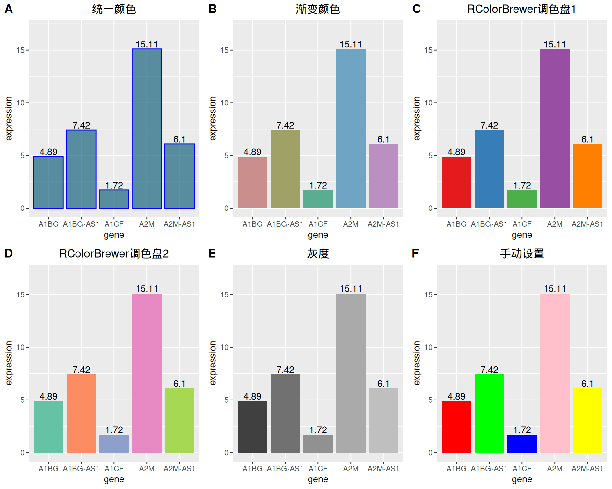
1.4 灰度条形图与纹理条形图
处理颜色的设置，ggplot2还可以绘制灰度条形图和纹理条形图。
# 灰度条形图
p <-
ggplot(data_tcga_mean, aes(x=gene, y=expression, fill=gene)) +
geom_bar(stat="identity", alpha=.6, width=.4) +
scale_fill_grey(start=0, end=0.8) + # 设置灰度范围
theme_bw()
p
# 纹理条形图
p <- ggplot(data_tcga_mean, aes(x=gene, y=expression)) +
geom_col_pattern(
aes(pattern=gene,
pattern_angle=gene,
pattern_spacing=gene
),
fill = 'white',
colour = 'black',
pattern_density = 0.5,
pattern_fill = 'black',
pattern_colour = 'darkgrey'
) +
theme_bw()
p
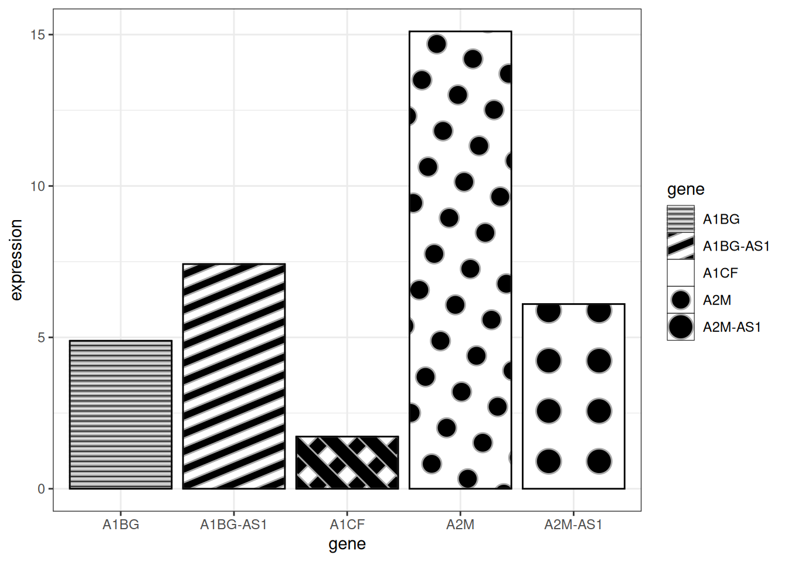
提示
关键参数:
-
fill：图案后的基础填充颜色 -
colour：条形的边框颜色 -
pattern_density：条形内图案的密度 -
pattern_fill：图案颜色 -
pattern_colour：图案的辅助色
2. 可变宽度条形图
可变宽度条形图实现了样本数量的可视化，用条形宽度来表示样本数量。
# 可变宽度条形图----
data <- data.frame(
group=c("A ","B ","C ","D ") ,
value=c(33,62,56,67) ,
number_of_obs=c(100,500,459,342)
)
# 设置宽度左右界限
data$right <- cumsum(data$number_of_obs) + 30*c(0:(nrow(data)-1))
data$left <- data$right - data$number_of_obs
# 绘图
p <-
ggplot(data, aes(ymin = 0)) +
geom_rect(aes(xmin = left, xmax = right, # 设置宽度上下限
ymax = value,
colour = group, fill = group),alpha=0.8) +
xlab("number of obs") +
ylab("value") +
theme_ipsum() +
scale_fill_brewer(palette = "Set1") +
theme(legend.position="none")
p
上图用条形宽度展示了样本量。
3. 误差线条形图
条形图允许添加误差线，我们可以通过 geom_errorbar 实现。
3.1 基础误差线条形图
# 基础误差条形图
p <-
ggplot(data_tcga) +
geom_bar( aes(x=gene, y=expression), stat="identity", fill="skyblue", alpha=0.7) +
geom_errorbar(aes(x=gene,
ymin=expression-sd, ymax=expression+sd),
width=0.4, colour="orange", alpha=0.9, size=1) +
labs(title = "基础误差条形图") +
theme(plot.title = element_text(hjust = 0.5))
p
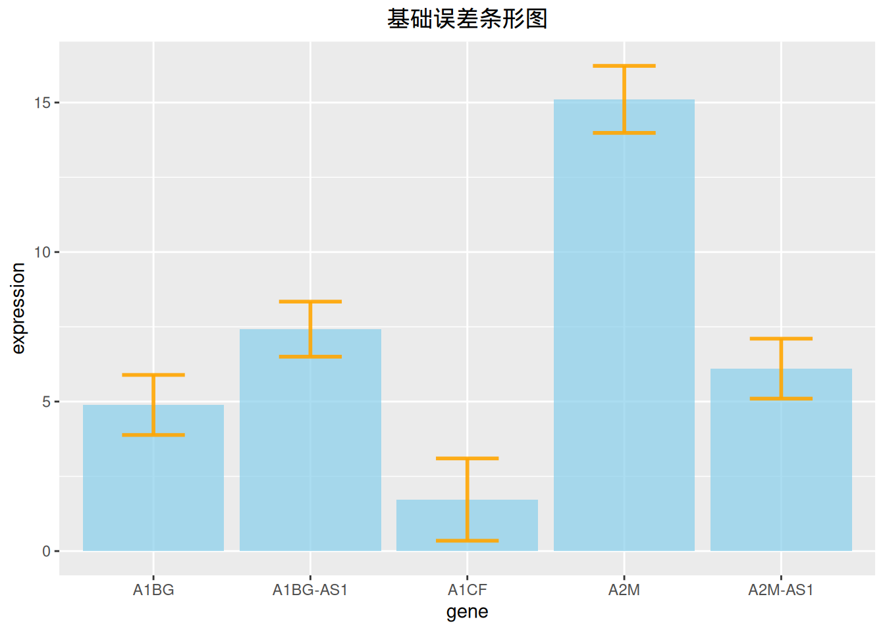
上图在展示各基因表达量的同时添加了标准差误差线。
3.2 多种类型误差线条形图
同时，ggplot2提供了多种误差线的类型，这里我们提供四种示例。
# 误差线条形图（以标准差为例）----
## 多种类型误差条形图
p1 <- ggplot(data_tcga) +
geom_bar( aes(x=gene, y=expression), stat="identity", fill="skyblue", alpha=0.7) +
geom_crossbar( aes(x=gene, y=expression,
ymin=expression-sd, ymax=expression+sd),
width=0.4, colour="orange", alpha=0.9, size=1.3) +
labs(title = "箱形误差条形图")+
theme(plot.title = element_text(hjust = 0.5))
p2 <- ggplot(data_tcga) +
geom_bar( aes(x=gene, y=expression), stat="identity", fill="skyblue", alpha=0.7) +
geom_linerange( aes(x=gene,
ymin=expression-sd, ymax=expression+sd),
colour="orange", alpha=0.9, size=1.3) +
labs(title = "线形误差条形图")+
theme(plot.title = element_text(hjust = 0.5))
p3 <- ggplot(data_tcga) +
geom_bar( aes(x=gene, y=expression), stat="identity", fill="skyblue", alpha=0.7) +
geom_pointrange( aes(x=gene, y=expression,
ymin=expression-sd, ymax=expression+sd),
colour="orange", alpha=0.9, size=1) +
labs(title = "线+点型误差条形图")+
theme(plot.title = element_text(hjust = 0.5))
p4 <- ggplot(data_tcga) +
geom_bar( aes(x=gene, y=expression), stat="identity", fill="skyblue", alpha=0.7) +
geom_errorbar( aes(x=gene, ymin=expression-sd, ymax=expression+sd),
width=0.4, colour="orange", alpha=0.9, size=1.3) +
coord_flip() +
labs(title = "水平误差条形图")+
theme(plot.title = element_text(hjust = 0.5))
plot_grid(p1, p2, p3, p4, labels = LETTERS[1:4], ncol = 2)
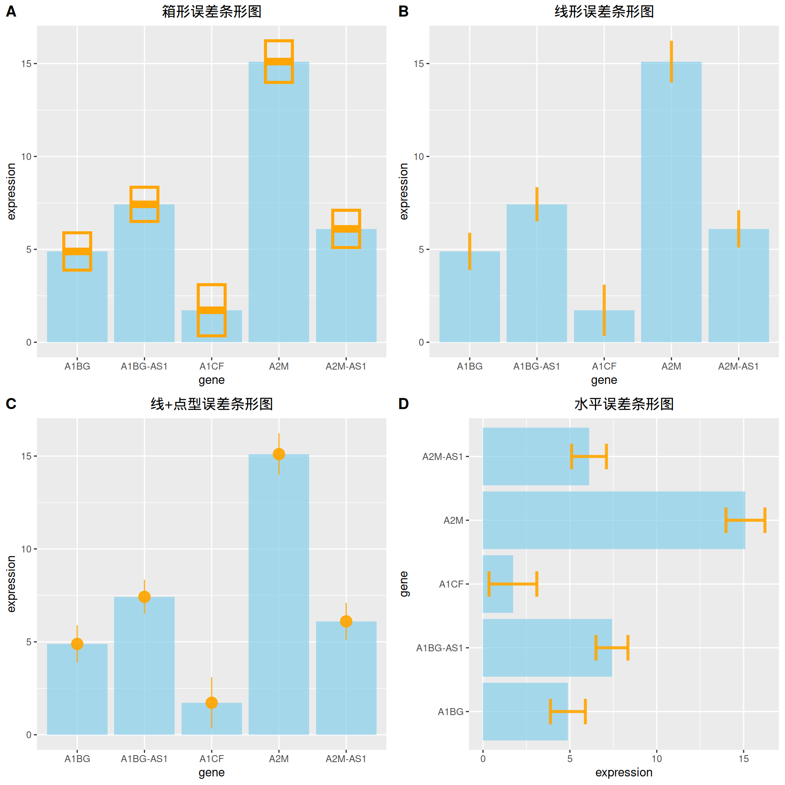
3.3 添加差异分析
# 添加差异分析
data_tcga_p <- filter(data_TCGA1,
gene_name == "A1BG" | gene_name == "A1CF" | gene_name == "A2M")
data_tcga_plot <- filter(data_tcga,
gene == "A1BG" | gene == "A1CF" | gene == "A2M")
# 组间p值计算
df_p_val <- data_tcga_p %>%
wilcox_test(formula = gene_expression~gene_name) %>%
add_significance(p.col = 'p',cutpoints = c(0,0.001,0.01,0.05,1),symbols = c('***','**','*','ns')) %>%
add_xy_position()
p <-
ggplot(data_tcga_plot) +
geom_bar( aes(x=gene, y=expression), stat="identity", fill="skyblue", alpha=0.7) +
geom_errorbar( aes(x=gene,
ymin=expression-sd, ymax=expression+sd),
width=0.4, colour="orange", alpha=0.9, size=1) +
stat_pvalue_manual(df_p_val,label = '{p.signif}', #添加差异分析线
tip.length = 0.01,
y.position = c(15,17,19)) +
labs(title = "添加差异分析") +
theme(plot.title = element_text(hjust = 0.5))
p
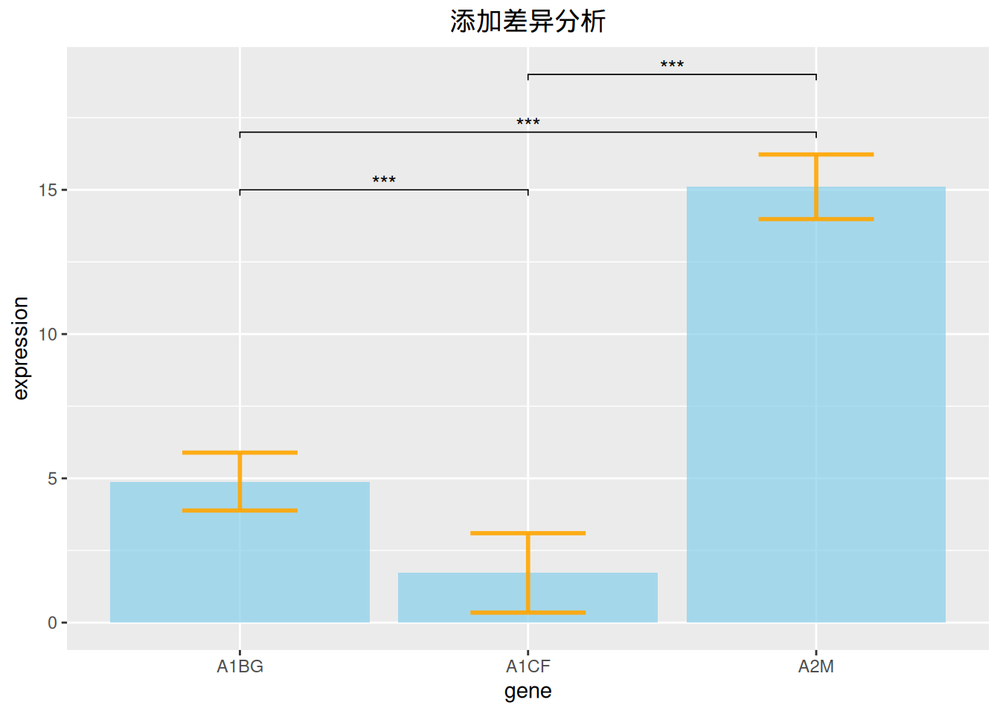
上图添加了三种基因表达数据的差异分析线。
4. 堆积条形图
在包含组内分组时，我们可以选择绘制堆积条形图。
以penguins数据集为例。
# 堆积条形图----
p <-
ggplot(data_penguins_flipper_length,aes(x=species,y=flipper_length_mm,fill=sex))+
geom_bar(stat="identity",
position = position_stack(reverse = TRUE))+ #改变堆积顺序
guides(fill=guide_legend(reverse = TRUE)) + #改变图例顺序
scale_fill_manual(values = c("#87CEFA","#8DB6CD"))
p
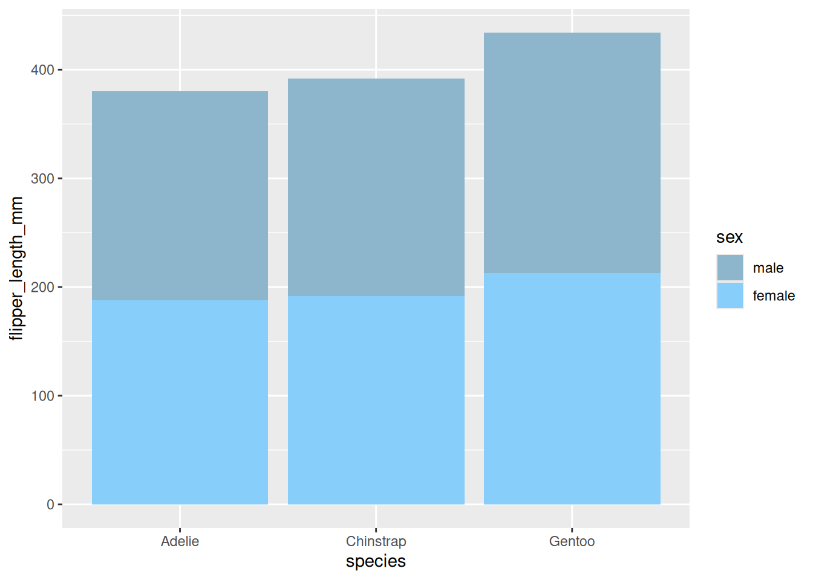
展示了不同性别企鹅翅膀长度的堆积条形图。
5. 百分比条形图
同样的，在进行比例分析时还可以选择绘制百分比条形图。
# 百分比条图----
p <-
ggplot(data_mpg,aes(class))+
geom_bar(aes(fill = drv),
position = 'fill') + #绘制百分占比
scale_fill_manual(values = c("#87CEFA","#8DB6CD","#84B6BD"))
p
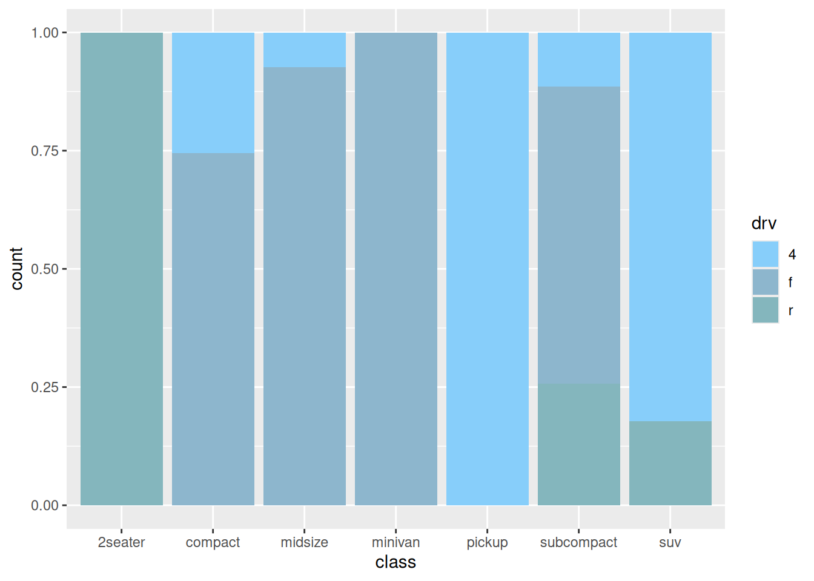
上图展示了各车型中驱动类型（四轮驱动、前轮驱动、后轮驱动）的百分比例。
6. 并列条形图
在包含组内分组时，我们还可以通过设置 position 参数来绘制并列条形图。
# 并列条形图----
p <-
ggplot(data_mpg,aes(class)) +
geom_bar(aes(fill = drv),
position = position_dodge2(preserve = 'single')) +
scale_fill_manual(values = c("#87CEFA","#8DB6CD","#84B6BD"))
p
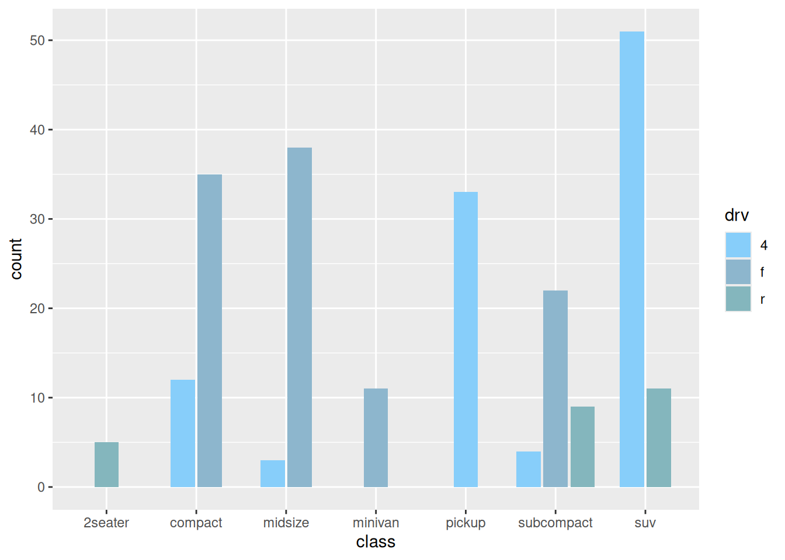
7. 条形图的变形
7.1 金字塔图
df <- tibble(
gene = factor(paste0("gene_", rep(1:16, 2)), levels = paste0("gene_", 16:1)),
stat = c(seq(-10, -100, -10), seq(-90, -40, 10), seq(10, 100, 10), seq(90, 40, -10)),
direct = rep(c("down", "up"), each=16)
)
p <-
ggplot(df, aes(gene, stat, fill = direct)) +
geom_col() +
coord_flip() +
scale_y_continuous(breaks = seq(-100, 100, 20),
labels = c(seq(100, 0, -20), seq(20, 100, 20)))
p
7.2 偏差图
# 偏差图
df <- tibble(
gene = factor(paste0("gene_", 1:20), levels = paste0("gene_", 20:1)),
stat = c(seq(100, 10, -10), seq(-10, -100, -10)),
direct = factor(rep(c("up", "down"), each=10), levels = c("up", "down"))
)
p <-
ggplot(df, aes(gene, stat, fill = direct)) +
geom_col() +
coord_flip()
p
应用场景
1. 基础条形图
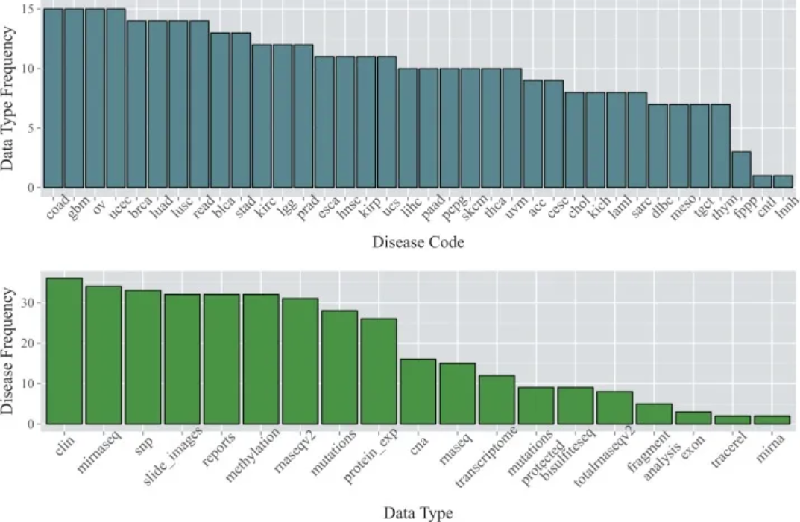
数据来自TCGA数据库。顶部的条形图显示了截至2015年1月36种癌症类型中每种癌症类型的可用数据类型数量；下方的条形图显示了每种数据类型可用的癌症类型的数量。[1]
2. 误差线条形图

(A)为大面积染色PBS、MSC、GENE、MSC +GENE各组胶原体积分数的条形图；(B)为天狼星红染色PBS、MSC、GENE、MSC +GENE各组胶原体积分数的条形图。[2]
3. 并列条形图
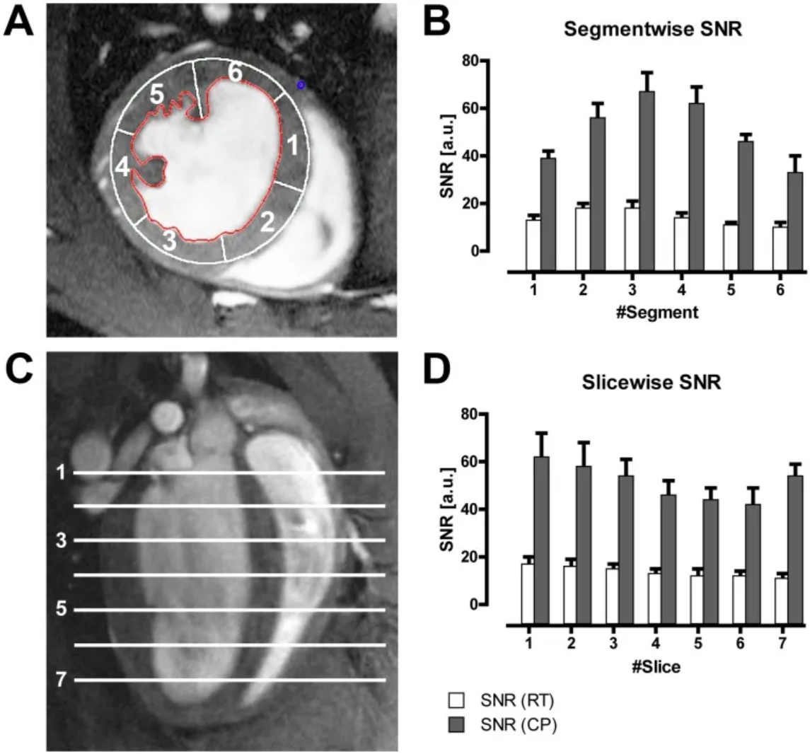
上图 B 展示了使用CryoProbe（CP）或 room temperature coil（RT）采集的六节段模型（A）中不同节段中所有小鼠的平均LV心肌信号噪比（SNR）；图D展示了不同切片中所有小鼠的平均LV心肌SNR。[3]
参考文献
[1] Kannan L, Ramos M, Re A, El-Hachem N, Safikhani Z, Gendoo DM, Davis S, Gomez-Cabrero D, Castelo R, Hansen KD, Carey VJ, Morgan M, Culhane AC, Haibe-Kains B, Waldron L. Public data and open source tools for multi-assay genomic investigation of disease. Brief Bioinform. 2016 Jul;17(4):603-15. doi: 10.1093/bib/bbv080. Epub 2015 Oct 12. PMID: 26463000; PMCID: PMC4945830.
[2] Yu Q, Fang W, Zhu N, Zheng X, Na R, Liu B, Meng L, Li Z, Li Q, Li X. Beneficial effects of intramyocardial mesenchymal stem cells and VEGF165 plasmid injection in rats with furazolidone induced dilated cardiomyopathy. J Cell Mol Med. 2015 Aug;19(8):1868-76. doi: 10.1111/jcmm.12558. Epub 2015 Mar 5. PMID: 25753859; PMCID: PMC4549037.
[3] Wagenhaus B, Pohlmann A, Dieringer MA, Els A, Waiczies H, Waiczies S, Schulz-Menger J, Niendorf T. Functional and morphological cardiac magnetic resonance imaging of mice using a cryogenic quadrature radiofrequency coil. PLoS One. 2012;7(8):e42383. doi: 10.1371/journal.pone.0042383. Epub 2012 Aug 1. PMID: 22870323; PMCID: PMC3411643.
[4] Bache S, Wickham H (2022). magrittr: A Forward-Pipe Operator for R. R package version 2.0.3, https://CRAN.R-project.org/package=magrittr.
[5] Wickham H, Vaughan D, Girlich M (2024). tidyr: Tidy Messy Data. R package version 1.3.1, https://CRAN.R-project.org/package=tidyr.
[6] H. Wickham. ggplot2: Elegant Graphics for Data Analysis. Springer-Verlag New York, 2016.
[7] Wilke C (2024). cowplot: Streamlined Plot Theme and Plot Annotations for ‘ggplot2’. R package version 1.1.3, https://CRAN.R-project.org/package=cowplot.
[8] Wickham H (2023). forcats: Tools for Working with Categorical Variables (Factors). R package version 1.0.0, https://CRAN.R-project.org/package=forcats.
[9] Wickham H, François R, Henry L, Müller K, Vaughan D (2023). dplyr: A Grammar of Data Manipulation. R package version 1.1.4, https://CRAN.R-project.org/package=dplyr.
[10] Rudis B (2024). hrbrthemes: Additional Themes, Theme Components and Utilities for ‘ggplot2’. R package version 0.8.7, https://CRAN.R-project.org/package=hrbrthemes.
[11] FC M, Davis T, ggplot2 authors (2024). ggpattern: ‘ggplot2’ Pattern Geoms. R package version 1.1.1, https://CRAN.R-project.org/package=ggpattern.
[12] Kassambara A (2023). rstatix: Pipe-Friendly Framework for Basic Statistical Tests. R package version 0.7.2, https://CRAN.R-project.org/package=rstatix.